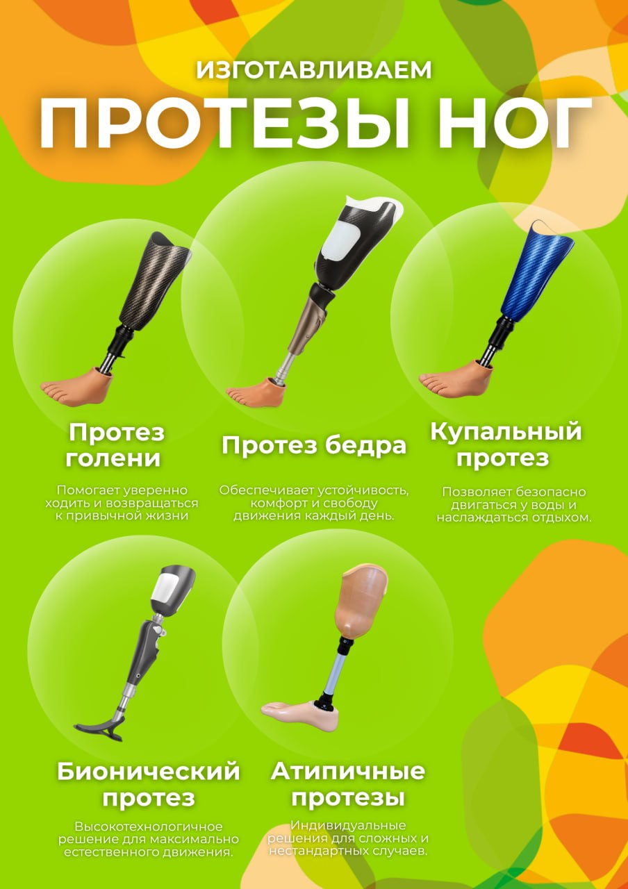

Подбор решения
Смотрим уровень ампутации, активность, состояние культи, бытовые задачи и реабилитационный потенциал. После этого выбирается тип протеза и крепления.
Мы сопровождаем пациента от первой консультации до подгонки протеза, обучения ходьбе и бытовой адаптации. Подбираем подходящую партнёрскую площадку, помогаем с документами, дорогой, жильём и логистикой.
Пациенту нужен понятный путь: какой протез подходит, где его изготовят, как пройти документы, где жить во время поездки и кто поможет научиться ходить.
Смотрим уровень ампутации, активность, состояние культи, бытовые задачи и реабилитационный потенциал. После этого выбирается тип протеза и крепления.
Направляем пациента в подходящую партнёрскую протезную: стационарную мастерскую, центр с залом реабилитации или выездной формат.
Помогаем с документами, маршрутом, проживанием, трансфером, обучением ходьбе и дальнейшим обслуживанием протеза.
Выбор зависит не от “дороже или дешевле”, а от активности, безопасности, уровня ампутации и задач пациента.
Крепление выбирает протезист после осмотра: важны форма культи, объём мягких тканей, состояние кожи, сила пациента и ожидаемый режим нагрузки.
Ottobock Skeo Sealing TT: силиконовый лайнер для ампутации на уровне голени. Вакуум поддерживается за счёт уплотнительного кольца; материал легко очищается, а гладкая поверхность упрощает надевание.
Описание изделияOttobock Skeo 6Y70: силиконовый лайнер с дистальным креплением для ампутации на уровне голени. Производитель указывает назначение для пользователей с низким или средним уровнем активности.
Описание изделияИз присланных комментариев видно, какие ролики стоит использовать в следующем наполнении страницы. Один ролик уже вставлен выше; для остальных нужны сами видеофайлы, чтобы поставить их на страницу без потери качества.
Михаил отдельно отметил ролик, где работает протезист. Такой материал лучше использовать в блоке “Команда и мастерская”: он показывает не бренд партнёра, а реального специалиста, который сопровождает пациента и работает руками.
Подходит для раздела сравнения: культеприёмная гильза, коленный модуль, стопа, крепление и почему протез бедра устроен сложнее протеза голени.
Стоит добавить в блок “особые решения”: протез, с которым можно ходить в воде и плавать, хорошо показывает, что подбор зависит от образа жизни пациента.
Обзор протезной от протезиста Ивана лучше поставить рядом с адресами партнёрских площадок: пациент видит не только адрес, но и где фактически проходит консультация и изготовление.

В маршруте могут быть протезы голени и бедра, купальные и спортивные решения, изделия для сложных случаев, косметическая облицовка и высокореалистичная отделка.
После первичной консультации пациент понимает, какие варианты подходят именно ему, чем они отличаются и какие документы нужны для получения или компенсации.
Мы не подменяем собой протезные предприятия и не используем их брендинг как свой. Наша роль — организовать для пациента правильный маршрут, площадку и сопровождение.
Доступен формат выезда специалистов, обучение пользованию протезом на дому, помощь с МТК и сопровождение до результата.
Доступны мастерские, центр протезирования и обучения, региональные филиалы и консультационные маршруты.
Процесс заранее раскладывается на шаги, чтобы пациент и семья понимали, что будет происходить и где нужна их подготовка.
Уточняем ситуацию, уровень ампутации, документы, город, сроки и ограничения.
Определяем тип протеза, возможный уровень комплектующих и формат площадки.
Помогаем пройти маршрут по ИПРА, электронному сертификату, компенсации или иной доступной схеме.
Протезист снимает замеры, готовит гильзу, подбирает узлы и выполняет подгонку.
Пациент пробует протез, специалисты корректируют посадку, высоту, устойчивость и походку.
Пациент учится ходить, получает рекомендации и остаётся в контуре дальнейшего обслуживания.
После установки пациент проходит обучение: первые шаги, работа с опорой, повороты, изменение темпа, бытовые сценарии и постепенное увеличение уверенности.
В маршруте участвуют протезист, врач-ортопед и реабилитационный специалист. Состав команды зависит от площадки и клинической ситуации.
Для пациента из другого региона важна не только медицина, но и простая бытовая организация поездки.
Пациент получает подходящий протез, понимает порядок документов, знает адрес площадки, проходит обучение и остаётся с понятным каналом поддержки.